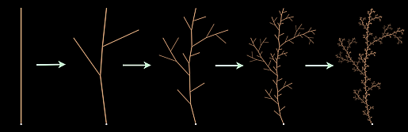

Many flowers, herbs and trees possess a structure that can be used to create computer generated pictures if these plants: a branch looks in principle like a smaller copy of the entire plant.
The visualization on the right is based on this principle. First a basic graphical pattern of the plant is chosen that exemplifies the branching structure: the prototype. The picture is then created as follows. Each individual stroke of the prototype is replaced with a smaller copy of the prototype. This creates a finer plant like structure. In this structure again each stroke is replaced by an even smaller copy of the prototype. An even finer structure emerges. This process is repeated many times.

Creation of a plant by repeated replacement of strokes